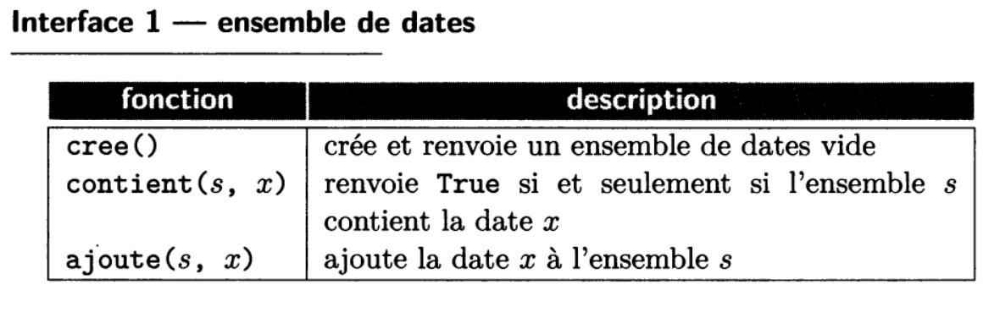

Gestion de modules
Comme vu dans le chapitre précédent, le travail sur les API a été grandement facilité par l'utilisation du module requests de Python, qui a fait une bonne partie du travail pour nous. Sans avoir eu à inspecter le code de ce module, nous avons pu l'utiliser facilement et avons ainsi évité de longues heures de développement pour obtenir le même résultat.
Lorsque le code d’un programme devient volumineux, il devient difficile de le mettre au point, c’est-à-dire de corriger ses bugs et de le maintenir, de le faire évoluer, notamment pour intégrer de nouvelles fonctionnalités.
Il est alors indispensable de le découper en plusieurs parties aussi indépendantes que possible les unes des autres. La plupart des programmes sont ainsi découpés en plusieurs modules, on parle de programmation modulaire.
On peut alors tester chaque module indépendamment (tests unitaires), et tester les modules ensemble (tests d’intégration), nous reviendrons sur les tests plus tard. La modularité facilite également la réutilisation : un module bien conçu peut être utilisé par d’autres programmes et mis à disposition de la communauté.
Les modules Python permettent ainsi d'enrichir le langage de nouvelles fonctionnalités et de nouveaux objets réutilisables facilement.
Importer un module
Un module s'importe par son nom, qui correspond au nom du fichier Python privé de l'extension .py.
Par exemple, le module random qui regroupe des fonctions en lien avec l'aléatoire (randint, choice, shuffle, ...) peut être appelé de la manière suivante :
import random
Le contenu du module est alors importé dans un espace de noms, ici "random". Si l'on souhaite par exemple appeler la fonction randint, on écrira donc :
alea = random.randint(1,5)
On peut également utiliser un espace de noms différent :
import random as rd
alea = rd.randint(1,5)
Une autre manière de faire est d'utiliser le symbole * pour tout importer depuis un module :
from random import *
alea = randint(1,6)
Attention !
En utilisant cette méthode, il y a un risque de conflit si le module contient des fonctions portant le même nom que d'autres fonctions déjà existantes.
Si l'on souhaite simplement, par exemple, importer la fonction randint et la fonction choices du module random, on peut écrire :
from random import randint, choices
alea = randint(1,6)
alea_lst = choices[1,2,4,3,7]
Obtenir de l'aide sur une fonction
Un module s'apparente à une boîte noire, on a donc en général pas le code des fonctions sous les yeux, d'où l'intérêt d'une bonne documentation.
La spécification d'une fonction permet d'informer les utilisateurs des tâches effectuées par cette fonction, des contraintes imposées sur les paramètres, des résultats attendus, (éventuellement) des erreurs affichées en cas de mauvaise utilisation...
On utilise pour cela une docstring (commentaire sur plusieurs lignes) qui :
- décrit ce que fait de la fonction.
- précise les paramètres d'entrée et leur type
- précise la valeur de sortie et son type
- éventuellement :
- spécifie les conditions d'utilisation (préconditions) d'une fonction.
- indique les effets de bord d'une fonction.
- propose des exemples d'utilisation d'une fonction.
- indique les erreurs levées en cas de mauvaise utilisation...
- etc.
Voici un exemple avec une fonction produit qio calcule le produit de deux entiers a et b :
def produit(a, b):
''' Fonction qui renvoie le produit de a et b.
:CU: type(a) == type(b) == int
:param a: (int) Un entier
:param b: (int) Un autre entier
:return: (int) Le produit de a et b
:Exemple:
>>> produit(4, 6)
24
'''
assert type(a) == type(b) == int
res = 0
for _ in range(b):
res += a
assert res == a*b
return res
Rappels annotations de types
On peut également indiquer les types des paramètres de fonctions sous la forme d'annotations de types, plutôt que de les spécifier dans la docstring. Une fonction produit qui calcule le produit de deux entiers a et b pourrait donc être présentée ainsi :
def produit(a, b):
''' Fonction qui renvoie le produit de a et b.
:param a: (int) Un entier
:param b: (int) Un autre entier
:return: (int) Le produit de a et b
:Exemple:
>>> produit(4, 6)
24
'''
[...]
ou
def produit(a: int, b: int) -> int:
''' Fonction qui renvoie le produit de deux entiers a et b.
:Exemple:
>>> produit(4, 6)
24
'''
[...]
La fonction help de Python permet d'obtenir la documentation des modules et fonctions.
Par exemple, les instructions suivantes permettent d'afficher toute la documentation du module random (classes, méthodes, fonctions...) :
>>> import random
>>> help(random)
De plus, le module pydoc permet de générer de la documentation à partir de docstrings.
pydoc <nom_classe> : Afficher la documentation sur terminal
pydoc -w <nom_classe> : Générer un fichier HTML
À vous de jouer
À l'aide de la fonction help, déterminez à quoi sert la fonction randrange du module random, le nombre et le nom de ses paramètres. Combien y a t-il de paramètres obligatoires ? Facultatifs ?
Note
On parle ici de "fonctions", mais en réalité on devrait plutôt parler de "méthodes", c'est-à-dire de fonctions contenues dans des "classes". Tout cela sera abordé lors du chapitre sur la programmation orientée objet (POO).
Activité - Créer un module
Vous allez créer un module permettant d'effectuer un certain nombre d'opérations sur des listes d'entiers.
À télécharger
- operations.py - Module permettant d'effectuer des opérations sur des listes.
- main.py - Programme principal
Correction
- operations_corr.py - Module corrigé permettant d'effectuer des opérations sur des listes.
- main_corr.py - Programme principal corrigé
Exercice 1
Complétez le corps des fonctions sum_lst, min_lst et max_lst permettant de renvoyer respectivement la somme des éléments, l'élément minimal et l'élément maximal d'une liste d'entiers passée en argument. Complétez également le corps de la fonction ajouter_debut permettant d'ajouter un élément au début d'une liste.
Corrigé exercice 1
def sum_lst(lst: list) -> int:
''' Renvoie le résultat de la somme des éléments d'une liste.
:Exemples:
>>> sum_lst([2,4,6,8])
20
'''
res = 0
for el in lst:
res += el
return res
def min_lst(lst: list) -> int:
''' Renvoie la valeur minimale d'une liste.
:Exemples:
>>> min_lst([8,1,9,2,7])
1
'''
min = lst[0]
for i in range(1, len(lst)):
if lst[i] < min:
min = lst[i]
return min
def max_lst(lst: list) -> int:
''' Renvoie la valeur maximale d'une liste.
:Exemples:
>>> max_lst([8,1,9,2,7])
9
'''
max = lst[0]
for i in range(1, len(lst)):
if lst[i] > max:
max = lst[i]
return max
def ajouter_debut(lst: list, el: int) -> list:
''' Renvoie une nouvelle liste contenant les éléments de lst incluant l'élément el en première position.
:Exemples:
>>> ajouter_debut([2,9,4,5], 8)
[8, 2, 9, 4, 5]
'''
return [el] + lst
Exercice 2
Ouvrez le script nommé main.py, et y importer le module operations.
Compléter la fonction to_bin permettant de transformer un entier en nombre binaire stocké sous la forme d'une liste de 0 et de 1. Vous utiliserez pour cela la fonction ajouter_debut définie dans le module operations.
Corrigé exercice 2
Il ne faut pas oublier d'importer la fonction ajouter_debut du module operations au début de votre script :
from operations import ajouter_debut
Pour réaliser la fonction to_bin, on utilise la méthode des divisions successives :
def to_bin(ent: int) -> list:
''' Renvoie la représentation binaire de l'entier spécifié, sous la forme d'une liste.
On utilise la méthode des divisions euclidiennes successives.
:Exemples:
>>> to_bin(10)
[1, 0, 1, 0]
'''
lst = []
while ent != 0:
lst = ajouter_debut(lst, ent%2)
ent //= 2
return lst
Exercice 3
Complétez la fonction moyenne permettant de calculer la moyenne des éléments d'une liste, en utilisant la fonction sum_lst de operations.
Corrigé exercice 3
Il ne faut pas oublier d'importer la fonction sum_lst du module operations au début de votre script. Pour importer à la fois ajouter_debut et sum_lst :
from operations import ajouter_debut, sum_lst
def moyenne(lst: list) -> float:
''' Renvoie la moyenne des éléments d'une liste.
:Exemples:
>>> moyenne([12,15,10,20])
14.25
'''
return sum_lst(lst) / len(lst)
La notion d'interface
Extrait du Balabonski Terminale
Pour chaque module, on distingue:
- sa réalisation (on dit aussi souvent implémentation), c'est-à-dire le code lui-même, et
- son interface, consistant en une énumération des fonctions définies dans le module qui sont destinées à être utilisées dans la réalisation d'autres modules, appelés clients.
L'interface d'un module est liée à sa documentation, et doit notamment expliciter ce qu'un utilisateur a besoin de connaître des fonctions proposées: comment et pour quoi les utiliser. Pour chaque fonction de l'interface, on a ainsi besoin de son nom, de la liste de ses paramètres et de sa spécification, c'est-à-dire les conditions auxquelles la fonction peut être appliquée et les résultats à attendre. Des informations supplémentaires concernant des caractéristiques comme le temps d'exécution ou l'espace mémoire requis peuvent également être utiles.
L'objectif est que ces fonctions incluses dans l'interface soient suffisantes pour permettre à un utilisateur de faire appel aux fonctionnalités du module, et qu'elles puissent être utilisées sans avoir besoin d'aller consulter le code du module. L'interface peut être décrite comme une abstraction du module: une description de ce qui caractérise le module, mais faite à un niveau assez haut, ignorant les détails concrets de la réalisation. La documentation de l'interface peut être vue comme un contrat entre l'auteur d'un module et ses utilisateurs, qui simplifie l'utilisation du module en limitant le nombre de choses qu'il faille lire, comprendre et mémoriser pour utiliser le module.
Voici un exemple d'interface :

Notion d'encapsulation
Le contrat qu'une interface établit entre l'utilisateur et l'auteur d'un module porte sur les résultats, et non pas sur les moyens mis en oeuvre : il est notamment libre d'introduire des fonctions, variables, constantes, ..., qui ne sont pas incluses dans l'interface. On parle alors de fonctions, variables, constantes encapsulées dans le module. (On reviendra sur cette notion d'encapsulation dans la partie sur la POO.)
En Python, l'auteur d'un module peut indiquer que certains éléments sont privés (c'est-à-dire encapsulés) en faisant commencer leur nom par un caractère _. Toutefois, contrairement à d'autres langages, en Python, on ne peut pas réellement empêcher l'utilisation de données "privées". Il s'agit plus d'une indication tacite à destination de l'utilisateur, que celui-ci doit respecter pour garantir le bon fonctionnement du module.
À vous de jouer !
Voici une interface permettant de créer et manipuler des dictionnaires :
| fonction | description |
|---|---|
cree() |
crée et renvoie un dictionnaire vide |
cle(d, k) |
renvoie True si et seulement si le dictionnaire dcontient la clé k. |
lit(d, k) |
renvoie la valeur associée à la clé k dans le dictionnaire d, et None si la clé k n'apparait pas. |
ecrit(d, k, v) |
ajoute au dictionnaire d l'association entre la clé k et la valeur v, en remplaçant une éventuelle association déjà présente pour k. |
Implémentez un module dictionnaire, dans un fichier nommé dictionnaire.py, qui correspond à cette interface.
Corrigé - À vous de jouer !
Source : nsi.erwandemerville.fr